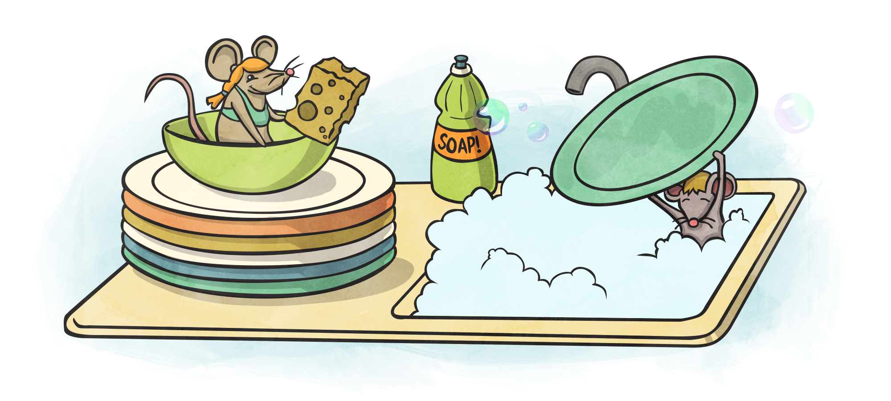
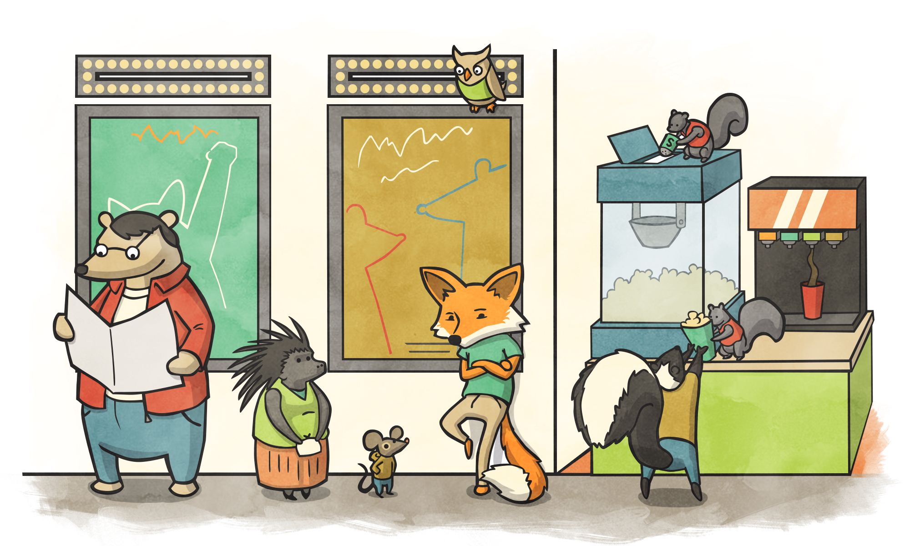

Stacks and Queues are two abstract data types. We can use various structures to represent them but what is most important, is their behavior that defines them and how we can use each respectively.
There are no code examples in this section but rather, just pseudocode.
A Stack is a "First In Last Out" (FILO) structure.
Examples of this are collecting and cleaning plates after a meal. When we collect a plate, we put it on the top of the previous plate and when we clean them, we take the one off the top first. Another, perhaps better, example is a can of Pringles or tennis ball sleeve. The first chip in, is the last one out.
Stacks have three primary functions.
.push(item), which adds the item on to the Stack.pop(), which removes the top item off the Stack.peek(), which examines the top item off of the StackYou'll notice that these functions already exist within JavaScript's Array. Modern programming languages have enabled this behavior, merging it in to the Dynamic Arrays linked in the previous chapter.
Another exmaple of a Stack is the "Undo" function on your computer. When you type something in, its pushed on to your computer's memory Stack. When (usually) Ctrl/Cmd + Z is invoked, it pops off the last item in the Stack and reverts us back to where we were.

Queues differ slightly in that they are a "First In First Out" (FIFO) data structure, as the name implies. Think of a movie theater line. The first person in line, gets their ticket first.
There are four functions that we want for our Queue
.enqueue(item), which puts an item to the back of the line.dequeue(), remove the first item in the Queue and moves all further items up.first(), examines the first item in line.last(), examines the last item in lineWhy use these structures? They're already built in to the language that I'm using!
This is a valid question but as noted before, the behavior of each and when to use them, even if they're incorporated into the language that we currently use.
Though you may end up with an Array, we would be using its Stacks or Queue behavior.
Use a Linked List (ref: previous chapter), to create a Stack.
Use a Linked List (ref: previous chapter), to create a Queue.
Using 2 Stacks, create a Queue. Below is an example of skeleton code that you would need to leverage.
function Queue() {
this.stack1 = new Stack()
this.stack2 = new Stack()
}
Using a Stack and recursion, write code to determine whether or not brackets are valid for code, represented as a String.
var input = "ary = [1,2,3]; for (var i = 0; i < ary.length; i++) { console.log(ary[i]) }"
Your function should return a Boolean, and accept a a String.
Determine a way to create a Priority Queue, where 1 is the highest priority.
It operates as a queue, though if we have something with the highest priority in our queue it must be dequeue'd first.
For instance:
{ priority: 3, value 5 }{ priority: 1, value 2 }{ priority: 2, value 1 }When we dequeue, { priority: 1, value 2 } will be the first item to be returned, though the second entered into the Priority Queue.
An example of this is Amazon, or other vendors. If you pay a bit more, you get a higher priority on your order.